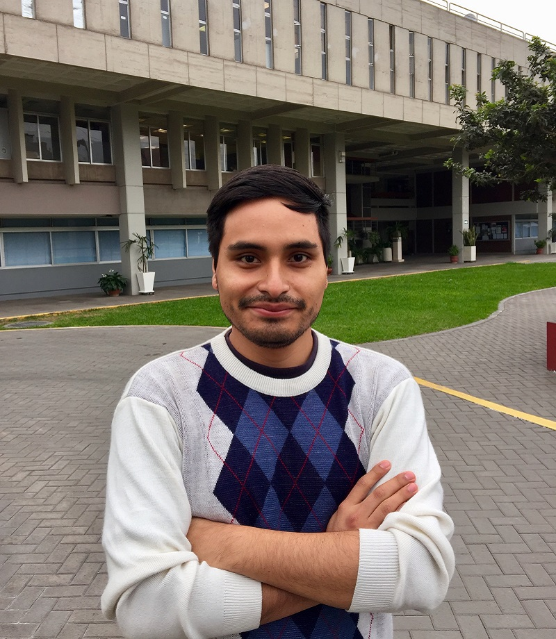

Coordinador General
Zavaleta Romero, Abraham Isaí
Estudiante de Ingeniería Biomédica con conocimientos en diseño arquitectónico. Aspira usar los conocimientos adquiridos en ingenieria biomédica para poder mejorar los métodos de diagnóstico y tratamiento de enfermedades en el Perú. En este proyecto será el encargado de ordenar los diferentes aspectos que conforman las actividades del equipo para asegurar que se alcancen los objetivos propuestos.